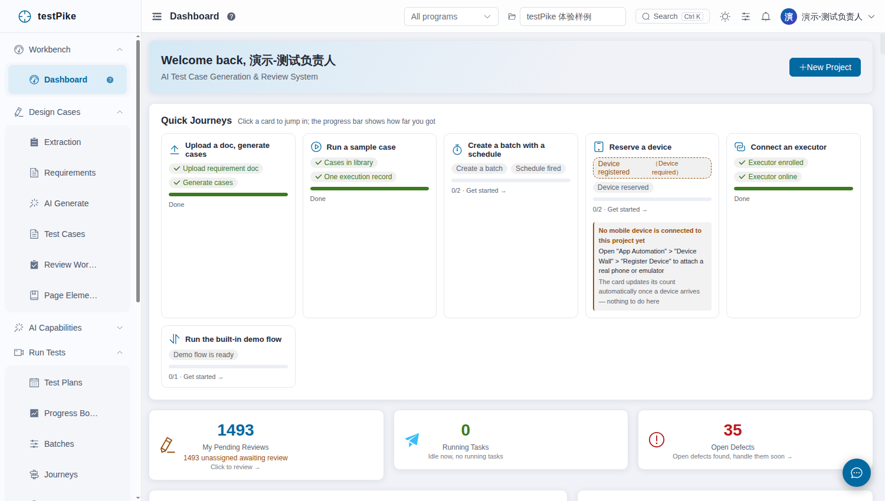
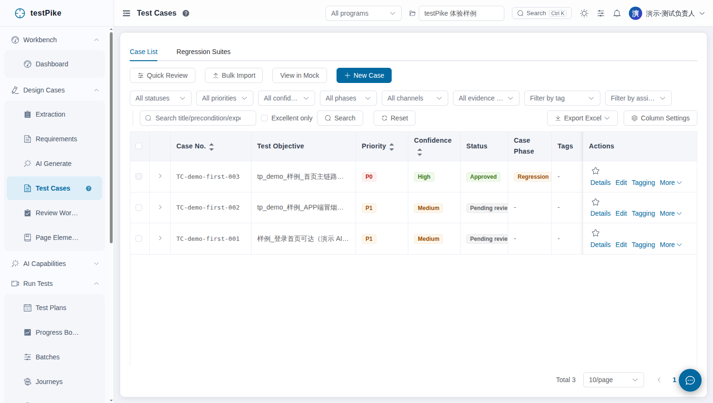

testPike self-evolving AI test platform
From requirement docs to executed tests — automatically
testPike turns requirement documents into structured, reviewable test cases and executable scripts, runs them on real browsers, real devices and real load engines, and learns from every review and every failure.

The closed loop
📄 requirement docs
🤖 AI extraction + generation
👀 review workbench
⚙️ action-JSON scripts
🚀 real execution cluster
📈 reports, defects, learning


What it covers
Requirements & cases
Evidence-anchored extraction, versioned register, batch generation with cost estimate, traceability.
Real execution
Playwright matrix, isolated executors, batch checkpoint/resume, flaky quarantine.
API & contracts
Workbench, contract mocks, change impact, CI verdicts.
Performance
Gatling · k6 · JMeter, live metrics, SLA breaker.
Mobile apps
Device wall, reservations, leases, pluggable adapters.
Runs offline
Mock LLM by default, pgvector knowledge, MCP both ways.
Quick start
git clone https://github.com/6bean/testpike.git && cd testpike
docker compose up -d # PostgreSQL + pgvector, Redis, RabbitMQ, object storage
cp .env.example .env
./installkit/install.sh --tier standard
# console on http://localhost:18080 — factory demo project and five role accounts are seeded